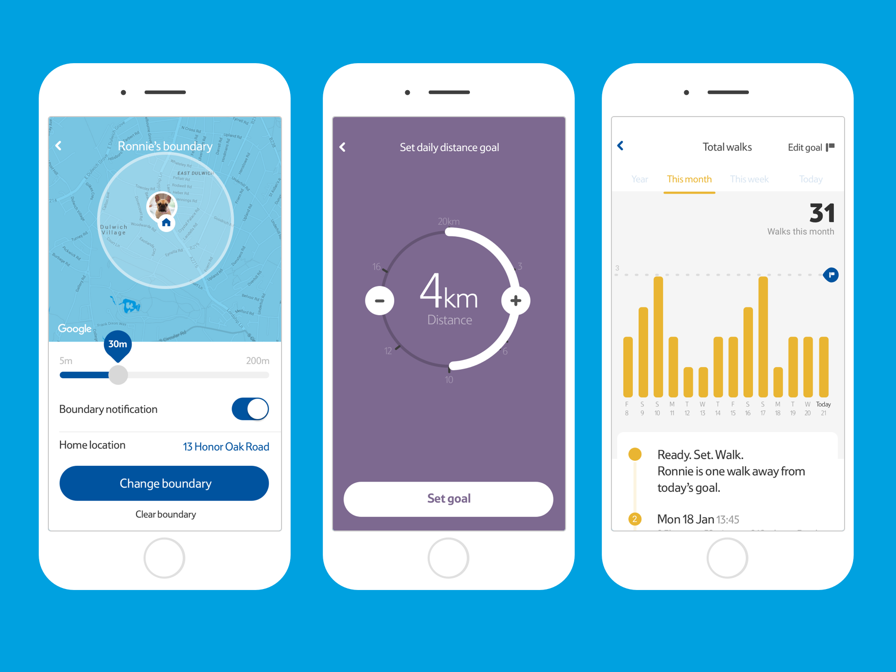
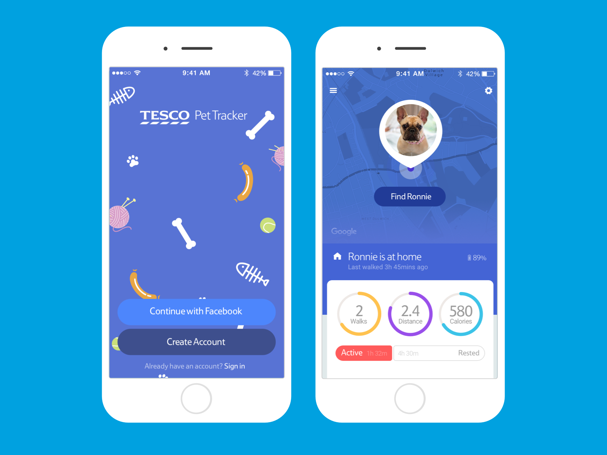
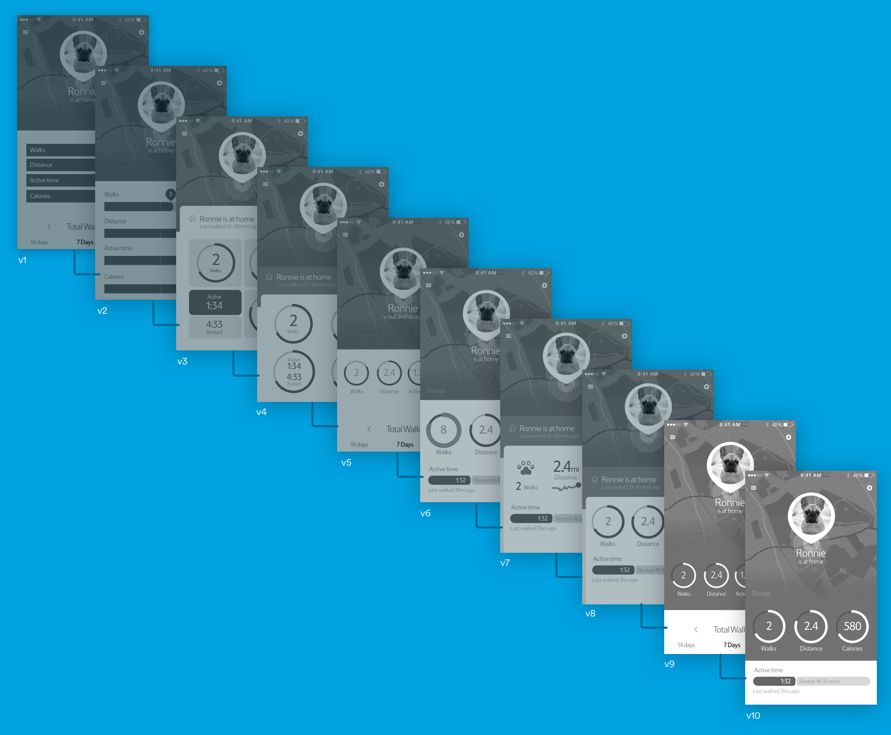
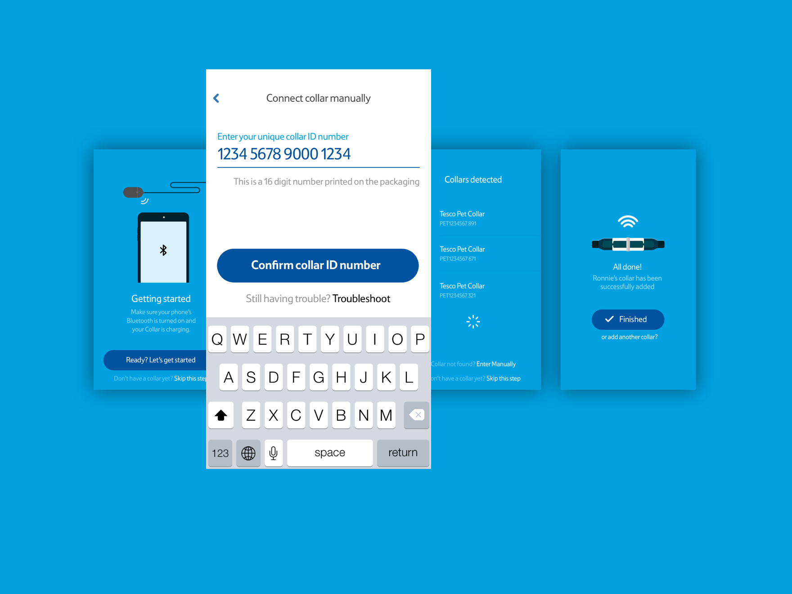
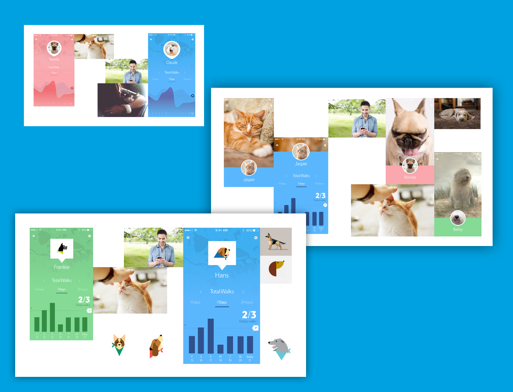
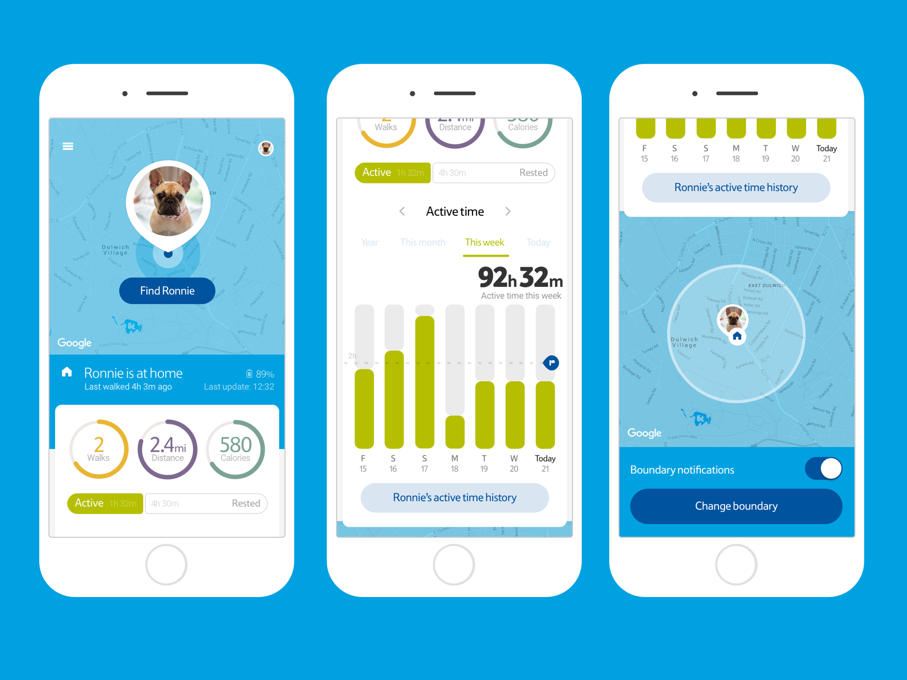
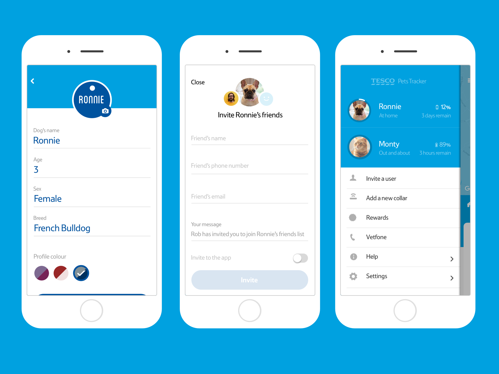
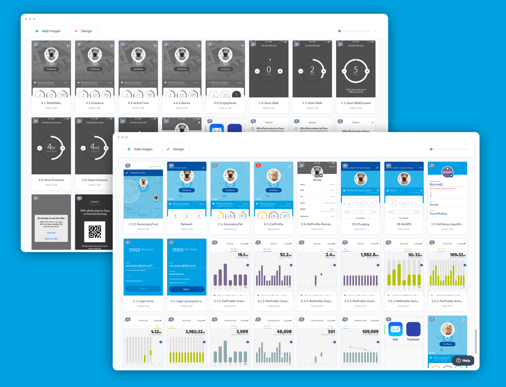

<div class="container-fluid">

  <div class="row">
    <div class="col-md-8">
      <h1>{{ page.title }}</h1>
    </div>
  </div>
  
</div>











<section class="project-cards">
  {% include project-cards.html %}
</section>
